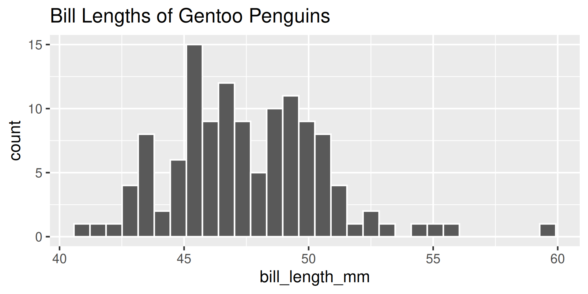
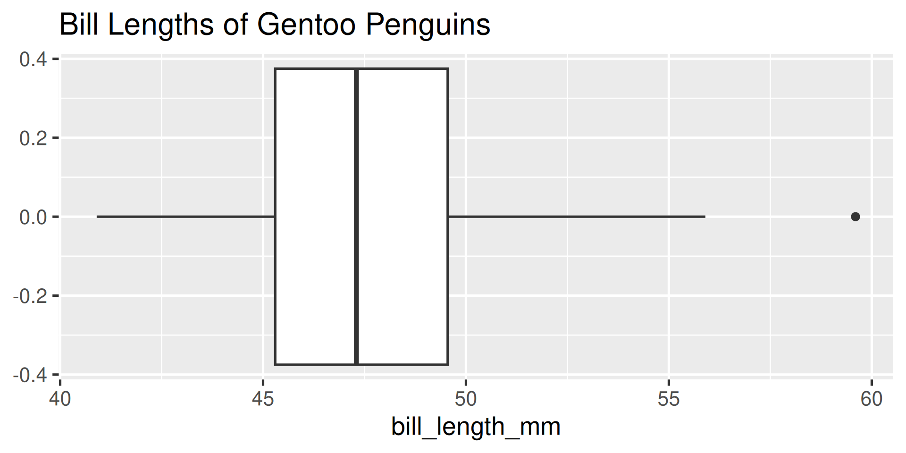
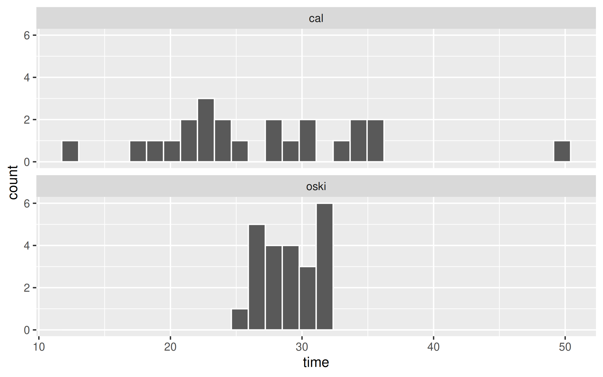

Summarizing Numerical Data
Agenda
- Announcements
- Reading Questions
- Break
- Worksheet: Summarizing Numerical Data
- R Workshop: Summarizing Numerical Data
- Appendix: More practice!
Announcements
- Lab 1 and Portfolio 1 are due tomorrow at 8pm.
Concept Questions
- Go To
Answer at pollev.com.
-Username _______
Which of the following plot types for numerical variables maintain all of the information found in the original data set?
- A. dot plot
- B. histogram
- C. violin plot
- D. box plot
00:30
If you wish to see less detail in your histogram and perform more aggregation, which of the following is the best course of action?
- A. switch to a dot plot
- B. switch to a bar chart
- C. instead of presenting the histogram, display the original data frame with the raw data
- D. increase the bin width of the histogram
- E. decrease the bin width of the histogram
00:30
Which word best describes a distribution with a long tail stretching out to the left?
A. bimodal
B. unimodal
C. left skewed
D. right skewed
00:30
How many more columns will the output from the second line of code have than the first?
- A. None
- B. 1
- C. 2
- D. 3
01:00
Before making a violin plot using ggplot2, how can we determine the order of the violins?
A. By using
select().B. By using
mutate()withfactor().C. By using
group_by()andsummarize().D. By using
data.frame().
00:30
Break
05:00
Worksheet: Summarizing Numerical Data
Mean, median, mode: which is best?
It depends on the nature of your data and what you seek to capture in your summary.
Get out your worksheet. You’ll be watching a 3 minute video that discusses characteristics of a typical human. Note which numerical summaries are used and what for.
Worksheet: Summarizing Numerical Data
25:00
More practice!
Describing Shape
Which of these variables do you expect to be uniformly distributed?
- bill length of Gentoo penguins
- salaries of a random sample of people from California
- house sale prices in San Francisco
- birthdays of classmates (day of the month)
Please vote at pollev.com.
01:00
-Which of these plots is more informative here? Which would you choose?


General Advice - Measures of Center
- Means are often a good default for symmetric data.
- Means are sensitive to very large and small values, so can be deceptive on skewed data. > Use a median
- Modes are often the only option for categorical data.
But there are other notions of typical… what about a maximum?
Concept Question 3 - Measures of Spread
- Why are measures of spread so important? Consider the following question.
There are two new food delivery services that open in Berkeley: Oski Eats and Cal Cravings. A friend of yours that took Stat 20 collected data on each and noted that Oski Eats has a mean delivery time of 29 minutes and Cal Cravings a mean delivery time of 27 minutes. Which would would you rather order from?
One possible reality


Which would would you rather order from?
01:00
Open R Practice
- Remainder of time work on Lab 1, Lab 2, or ask TA’s coding questions.